Electronics and Fabrication
For electronics we utilized addressible LEDs, a servo, and power management components such that we could localize everything to a central 12V power supply but use buffers to provide less voltage to some components. The electronics themselves can be wired to a Raspberry Pi or microcontroller and were installed into the wardrobe itself.
We fabricated the wardrobe from wooden panels and 2x4 beams. This shell is composed as seen below.
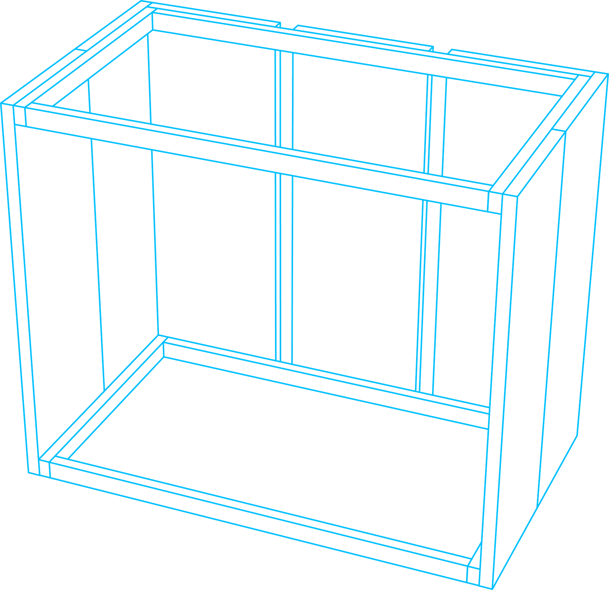
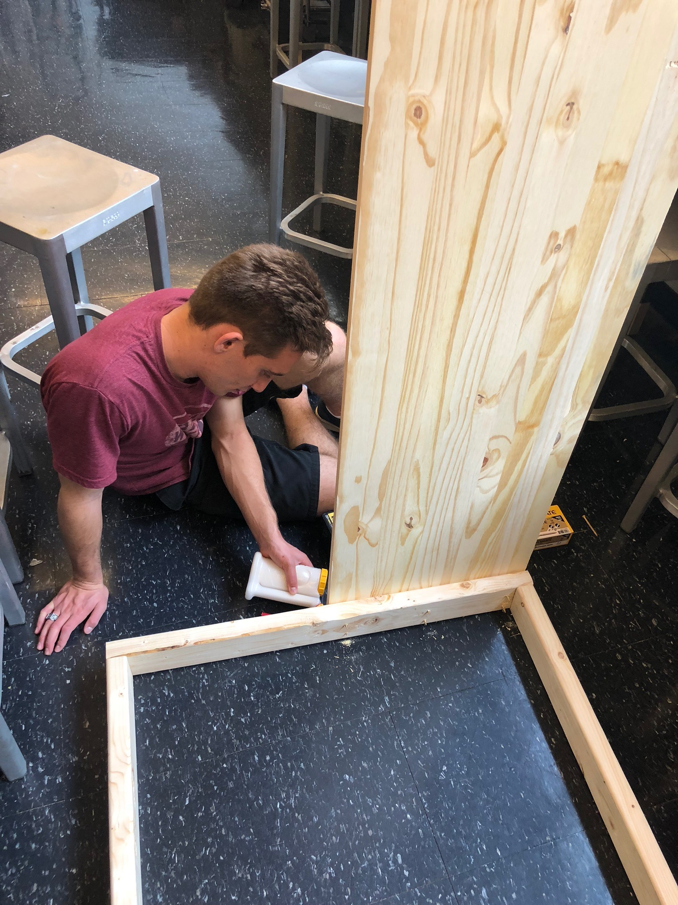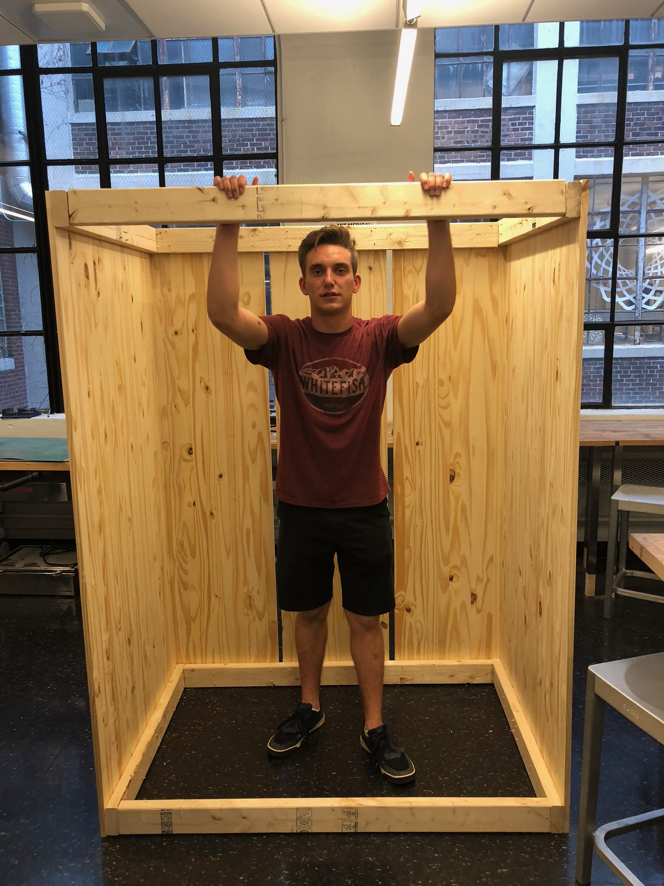
Above; some fabrication photos, shell drawing.
We then fabricated a door frame to hold a monitor. We hung this door frame on a rolling door track we purchased from a hardware store. We placed the door on this track such that it rolled along and held up the monitor. To motorize this track we added a rack and pinion we purchased from McMaster Carr. At first we had used a laser cut version and while this worked for the frame and assured us the mechanism would work, the acrylic couldn't quite handle the full torque.
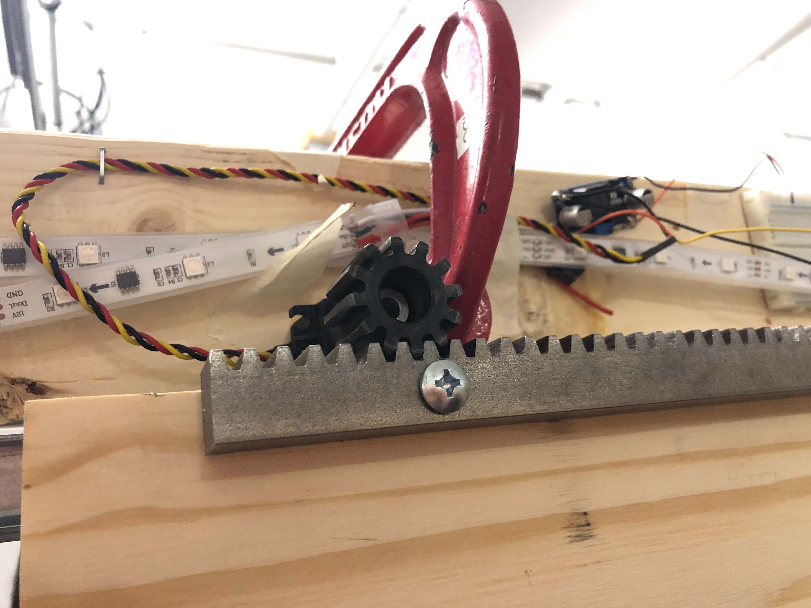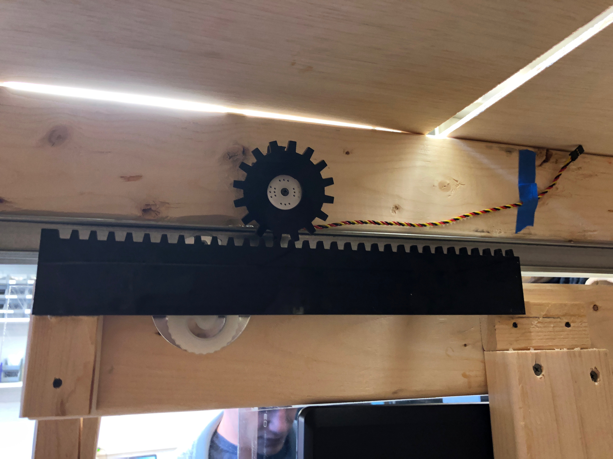
Above; the final rack and pinion system and laser cut version.
Along with the rack and pinion were the lights and microcontrollers to handle the electronics. The lights were installed in various parts of the wardrobe in the hopes of adding more interaction and guiding users to the correct clothes in a timely manner. There is also a camera installed to see the clothes and feed to the main computer for the OpenCV code.
The user interacts with the mirror. There is a monitor in the door frame covered by a piece of acrylic that is half silvered in order to achieve this smart mirror effect. This was achieved by using acrylic and tightly pressing car window tint to it. There is a LEAP motion sensor mounted on the door to enable gesture control, as no one wants a smudged mirror.
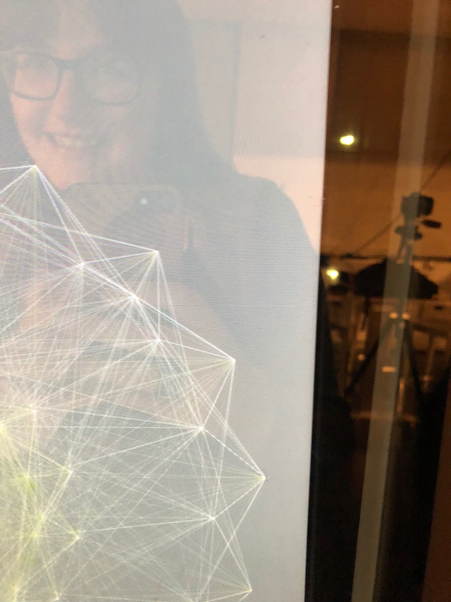
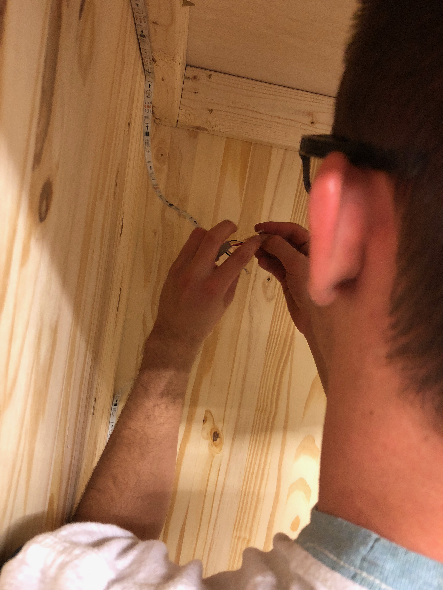
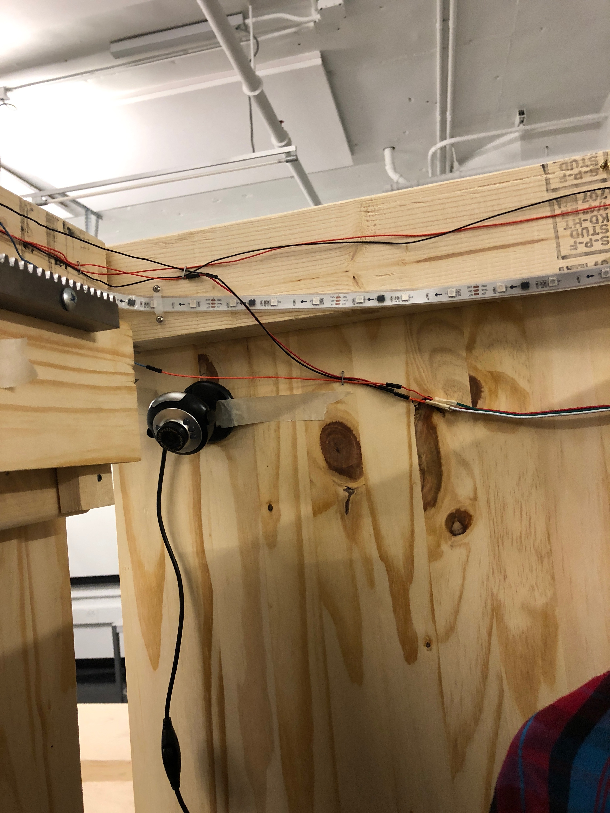
Above; a more close up look at the mirror, some mounting of LEDs, and a mounted camera.
Below is the diagram for the final system as well as some photos of the prototype we actually demoed on the 13th.
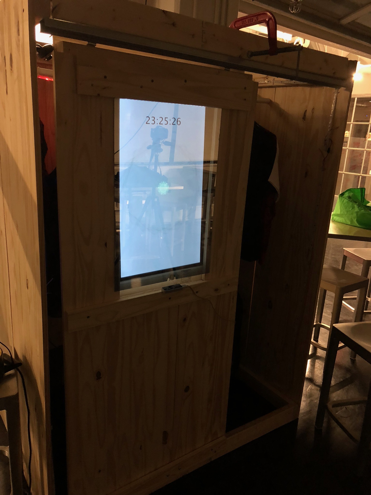
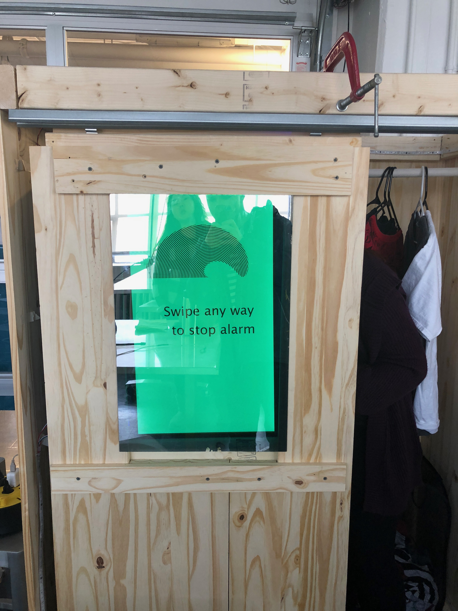
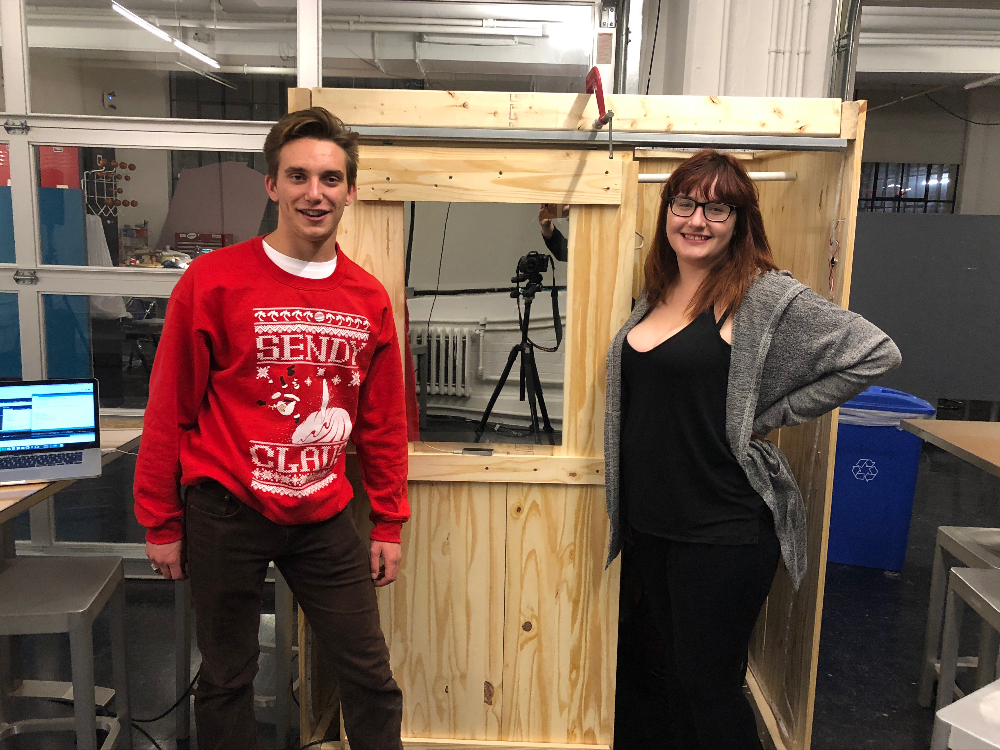
 This was our guiding question for this project. Furniture is such a central part of our space and routine. Through this project we wanted to explore and design what might go into an interactive wardrobe.
This was our guiding question for this project. Furniture is such a central part of our space and routine. Through this project we wanted to explore and design what might go into an interactive wardrobe.